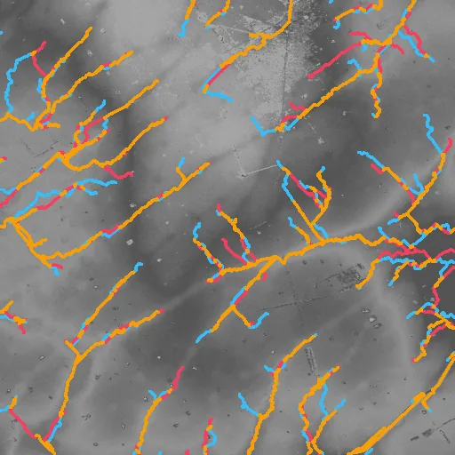
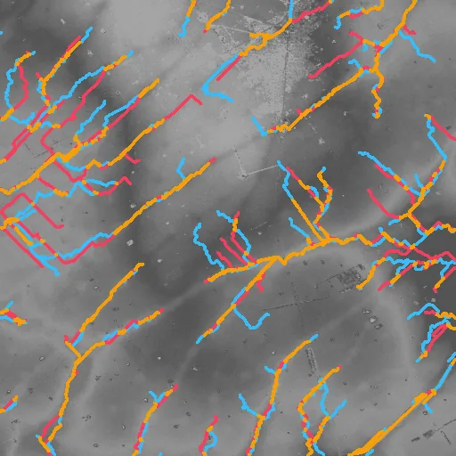
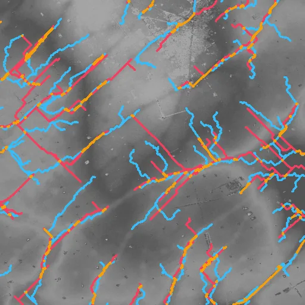
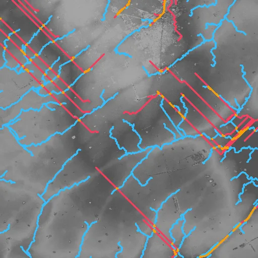
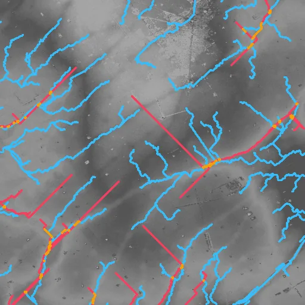
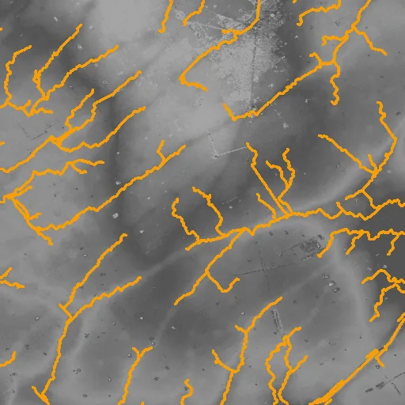
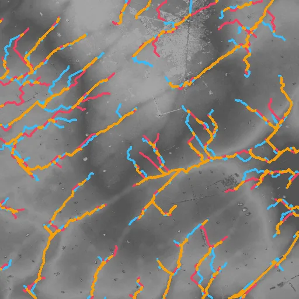
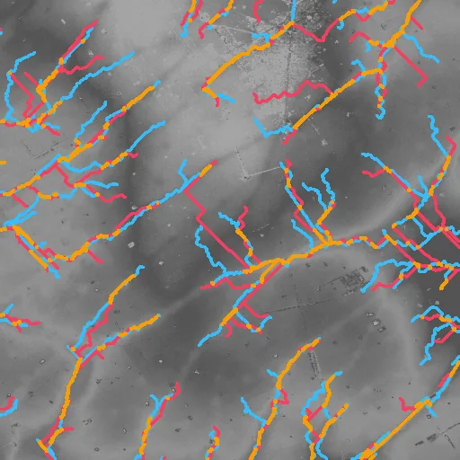
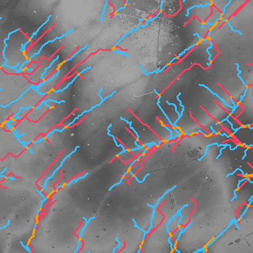

Benchmark / Use cases / Drainage networks / Results / cop-dem-glo30-21
cop-dem-glo30-21
Compression ratio and stream_f1
Each point is a bound on the root-mean-square error, written next to it in metres, on this sample.
GeoZL PIVCOGeoZL PFORJPEG XL
Decoded stream networks
The result on the compressed copy at each error bound, in metres.on both within one celllostnew
GeoZL PIVCO
GeoZL PFOR

RMSE ≤ 0.1 m, measured 0.0817
4.8× · stream_f1 +0.665
RMSE ≤ 0.2 m, measured 0.141
6.0× · stream_f1 +0.502
RMSE ≤ 0.4 m, measured 0.374
7.3× · stream_f1 +0.271 RMSE ≤ 0.8 m, measured 0.789
RMSE ≤ 0.8 m, measured 0.789
11.3× · stream_f1 +0.208 RMSE ≤ 1.6 m, measured 1.56
RMSE ≤ 1.6 m, measured 1.56
18.9× · stream_f1 +0.127
RMSE ≤ 3.2 m, measured 2.77
49.6× · stream_f1 +0.127
RMSE ≤ 6.4 m, measured 5.3
48.4× · stream_f1 +0.071JPEG XL

RMSE ≤ 0.1 m, lossless
4.9× · stream_f1 +1.000
RMSE ≤ 0.2 m, measured 0.199
34.2× · stream_f1 +0.581
RMSE ≤ 0.4 m, measured 0.399
161.6× · stream_f1 +0.369 RMSE ≤ 0.8 m, measured 0.794
RMSE ≤ 0.8 m, measured 0.794
1643.5× · stream_f1 +0.137 RMSE ≤ 1.6 m, measured 0.794
RMSE ≤ 1.6 m, measured 0.794
1643.5× · stream_f1 +0.137 RMSE ≤ 3.2 m, measured 0.794
RMSE ≤ 3.2 m, measured 0.794
1643.5× · stream_f1 +0.137
RMSE ≤ 6.4 m, measured 0.794
1643.5× · stream_f1 +0.137